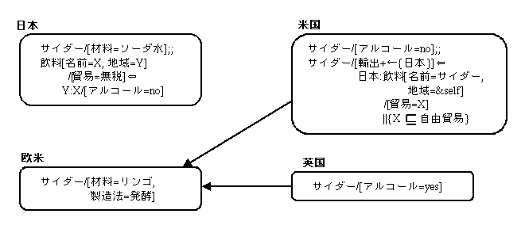

より大規模で実用的な知識情報処理システムを実現するためには、大量で複雑 な知識を計算機上で効率良く扱う機能が必要がある。これが知識ベース管理機 能である。これを実現するためには以下のことを考慮する必要がある。
Quixote 言語は、実世界の知識を自然に表現するために、データベース、プロ グラミング言語、自然言語処理などの複数の分野から検討を加えて設計された マルチパラダイム言語である。このような知識表現には、オブジェクトの情報 は完全であるか不完全であるかによって従来複数の流れがあったが、Quixote はこれらを自然に統合した言語としては世界で初めての言語となっている。
Quixote システムは、上記の知識ベースに対する高度な利用を可能にするため に、推論機能を強化し、大量の知識をディスクに格納するする機能をサポート している。前者の機能としては、通常の演繹の他に、知識ベースに仮説を追加 して推論する機能や、知識ベースに不足している知識を推論する機能などもサ ポートしている。このようは包括的な機能を持った知識ベース・システムは他 に例を見ない。
この Quioxte 言語と Quixote システムの有効性は、新しい事件の判決を予測 する法的推論、複数の自然言語表現から曖昧性を除去する状況推論、複雑な構 造体間の関連を推論する遺伝子情報処理などの応用によって確かめられている。

Quixote で知識がいかに表現されるかを例で示す。たとえば